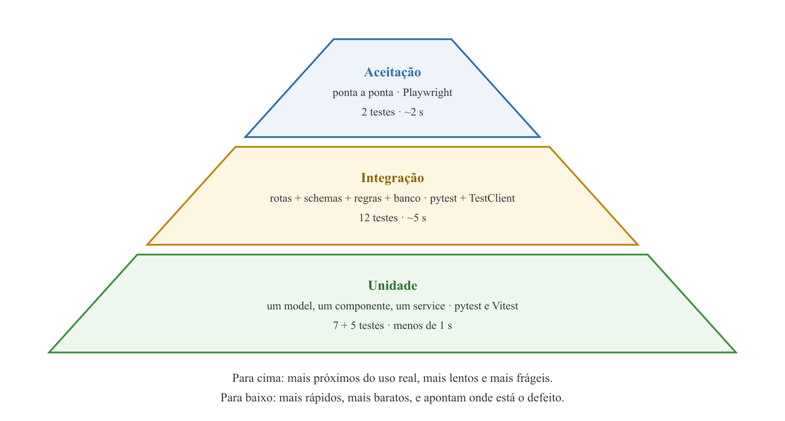
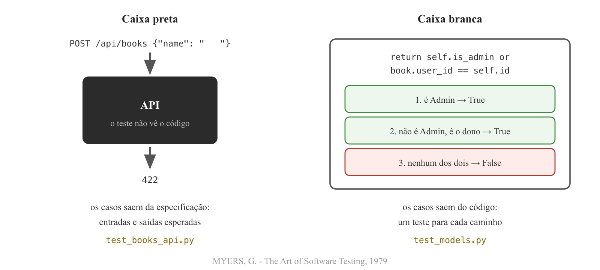
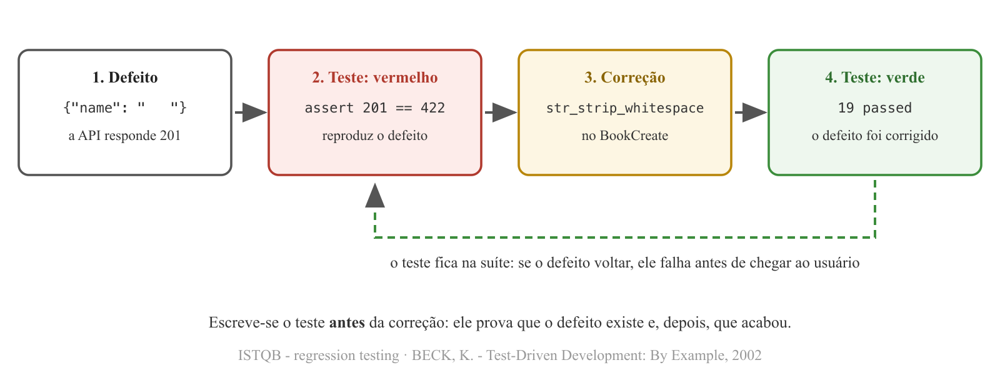

Programação Avançada - Aula 08
https://github.com/anchietajunior/programacao-avancada-6
Universidade Unirios
Cadastrar dois usuários, fazer login com cada um, colar o token no Authorize, criar livros, tentar o livro do outro, promover um Admin, conferir 401, 403 e 404 - e repetir tudo no React.
Testar é o processo de executar um programa com a intenção de encontrar erros.
O teste de programas pode ser usado para mostrar a presença de defeitos, mas nunca para mostrar a sua ausência.
MYERS, G. - 1979 · DIJKSTRA, E. W. - EWD 249, 1970
test_, e a verificação é um assert comum.BECK, K. - Simple Smalltalk Testing, 1994 · BECK, K.; GAMMA, E. - Test Infected, 1998 · docs.pytest.org
def test_user_lists_only_own_books(client, clarice, machado_admin):
create_book(client, machado_admin, name="Dom Casmurro")
create_book(client, clarice, name="A Hora da Estrela")
response = client.get("/api/books", headers=clarice)
assert [book["name"] for book in response.json()] == ["A Hora da Estrela"]
WAKE, B. - 3A: Arrange, Act, Assert, xp123.com, 2001

COHN, M. - Succeeding with Agile, 2009 · VOCKE, H. - The Practical Test Pyramid, 2018
VOCKE, H. - The Practical Test Pyramid, martinfowler.com, 2018

MYERS, G. - The Art of Software Testing, 1979
| Nível | Concentra-se em (ISTQB) | No projeto |
|---|---|---|
| Unidade | componentes individuais de software | Book.progress, User.can_access, BookItem, login |
| Integração | interações entre componentes | rota + schema + regra + banco, pelo TestClient |
| Aceitação | necessidades do usuário e critérios de aceitação | os fluxos do glossário num navegador de verdade |
O ISTQB (International Software Testing Qualifications Board) mantém o glossário de referência da área; definições em tradução livre.
ISTQB - Glossary of Software Testing Terms, glossary.istqb.org
Teste repetido depois de uma modificação para garantir que ela não introduziu defeitos nem expôs defeitos nas partes não alteradas do software.

ISTQB - regression testing, tradução livre · BECK, K. - Test-Driven Development: By Example, 2002
Etapa 1 · Backend
Mac e Windows (venv ativo, dentro de projeto/backend)
pip install pytest httpx2
pip freeze > requirements.txt
backend/pytest.ini
[pytest]
testpaths = tests
pythonpath = .
TestClient do FastAPI usa para chamar a API nos testes;testpaths: os testes ficam em tests/; pythonpath: um teste importa models como o main.py faz.Etapa 1 · Backend
@pytest.mark.parametrize(
("current_page", "pages", "expected_progress"),
[(0, 300, 0), (120, 300, 40), (1, 3, 33), (300, 300, 100)],
)
def test_progress_is_the_current_page_over_the_total_of_pages(current_page, pages, expected_progress):
book = Book(name="Dom Casmurro", pages=pages, current_page=current_page, user_id=1)
assert book.progress == expected_progress
test_*.py e funções test_*; o nome é a frase que aparece quando o teste falha;parametrize: o mesmo teste roda uma vez para cada linha da tabela de casos;Book é um objeto Python comum até entrar numa sessão.Documentação oficial do pytest - docs.pytest.org (parametrize)
Etapa 1 · Backend
def test_admin_can_access_a_book_of_another_user():
admin = User(id=1, role=Role.ADMIN)
book_of_another_user = Book(user_id=2)
assert admin.can_access(book_of_another_user)
def test_user_cannot_access_a_book_of_another_user():
user = User(id=2, role=Role.USER)
book_of_another_user = Book(user_id=1)
assert not user.can_access(book_of_another_user)
is_admin or book.user_id == self.id - o do meio é test_user_can_access_own_book;or por and e rode pytest -v: falha o teste do Admin - True and False é False.Etapa 1 · Backend
@pytest.fixture
def engine():
test_engine = create_engine("sqlite://", connect_args={"check_same_thread": False},
poolclass=StaticPool)
Base.metadata.create_all(test_engine)
yield test_engine
Base.metadata.drop_all(test_engine)
yield limpa - mesmo se o teste falhar;"sqlite://"): nasce vazio, recebe as tabelas e desaparece no fim do teste. O StaticPool mantém uma conexão só, para todas as sessões verem o mesmo banco;tests/conftest.py, que o pytest carrega sozinho.Documentação oficial do pytest - docs.pytest.org (fixtures, conftest.py)
Etapa 1 · Backend
@pytest.fixture
def client(engine):
def get_test_session():
with Session(engine) as session:
yield session
app.dependency_overrides[get_session] = get_test_session
yield TestClient(app)
app.dependency_overrides.clear()
Depends, visto pelo outro lado: toda rota que pede get_session recebe a sessão do SQLite - e não percebe a troca;reading_tracker do MySQL nunca recebe dado de teste.Documentação oficial do FastAPI - Testing Dependencies with Overrides
Etapa 1 · Backend
@pytest.fixture
def clarice(client):
return signup_and_login(client, "Clarice Lispector", "clarice@exemplo.com")
@pytest.fixture
def machado_admin(client, engine):
headers = signup_and_login(client, "Machado de Assis", "machado@exemplo.com")
with Session(engine) as session:
statement = select(models.User).where(models.User.email == "machado@exemplo.com")
machado = session.scalars(statement).one()
machado.role = models.Role.ADMIN
session.commit()
return headers
clarice pede client, que pede engine;signup_and_login cadastra e entra pela própria API e devolve o header com o token; o Admin é promovido direto no banco.Etapa 1 · Backend
def test_user_gets_404_for_a_book_of_another_user(client, clarice, machado_admin):
book_of_machado = create_book(client, machado_admin)
path = f"/api/books/{book_of_machado['id']}"
assert client.get(path, headers=clarice).status_code == 404
assert client.put(path, json={"name": "x", "pages": 10}, headers=clarice).status_code == 404
assert client.delete(path, headers=clarice).status_code == 404
TestClient fala com a aplicação sem rede e sem uvicorn: a requisição atravessa dependências, rota, regra de acesso e banco;can_access - só que o livro alheio responde 404.Documentação oficial do FastAPI - fastapi.tiangolo.com (Testing)
Etapa 1 · Backend
def test_stats_are_forbidden_for_a_user(client, clarice):
response = client.get("/api/admin/stats", headers=clarice)
assert response.status_code == 403
def test_admin_gets_the_counts_of_users_and_books(client, clarice, machado_admin):
client.post("/api/books", json={"name": "Dom Casmurro", "pages": 300}, headers=machado_admin)
client.post("/api/books", json={"name": "A Hora da Estrela", "pages": 90}, headers=clarice)
response = client.get("/api/admin/stats", headers=machado_admin)
assert response.status_code == 200
assert response.json() == {"users_count": 2, "books_count": 2}
pytest -v: 18 testes em poucos segundos - a meia hora de cliques. Importar o main.py executa o create_all no MySQL de desenvolvimento: ele precisa estar no ar, embora nenhum dado de teste chegue a ele.Etapa 1 · Backend
POST /api/books
{"name": " ", "pages": 10}
min_length=1 do BookCreate conta os espaços como caracteres: " " tem três;Etapa 1 · Backend
def test_book_name_made_only_of_spaces_is_rejected(client, clarice):
response = client.post("/api/books", json={"name": " ", "pages": 10}, headers=clarice)
assert response.status_code == 422
FAILED tests/test_books_api.py::test_book_name_made_only_of_spaces_is_rejected
E assert 201 == 422
1 failed, 18 passed
O teste falha pelo motivo certo: a API respondeu exatamente o que o Swagger mostrou.
Etapa 1 · Backend
class BookCreate(BaseModel):
model_config = ConfigDict(str_strip_whitespace=True)
" " vira "" e o min_length recusa com 422; " Dom Casmurro " é gravado como "Dom Casmurro";pytest: 19 passed. O teste fica na suíte - se alguém remover a configuração, ele falha antes de o defeito chegar a um usuário.Documentação oficial do Pydantic - docs.pydantic.dev (str_strip_whitespace)
"The more your tests resemble the way your software is used, the more confidence they can give you."
button, heading, link);DODDS, K. C. - Testing Library, Guiding Principles, testing-library.com
Objetos que substituem, durante o teste, um componente real do qual o código testado depende - como o dublê de um ator nas cenas de risco.
| Tipo | O que faz | Na aula |
|---|---|---|
| stub | devolve respostas prontas | o fetch que responde como a API |
| spy | registra como foi chamado | vi.fn() no onDelete |
| fake | implementação simplificada que funciona | o SQLite em memória |
| mock, dummy | verifica chamadas esperadas; só ocupa o lugar | - |
MESZAROS, G. - xUnit Test Patterns: Refactoring Test Code, 2007
Etapa 2 · Frontend
Mac e Windows (dentro de projeto/frontend)
npm install -D vitest jsdom @testing-library/react @testing-library/dom
export default defineConfig({
plugins: [react(), tailwindcss()],
test: {
environment: "jsdom",
include: ["src/**/*.test.{js,jsx}"],
},
});
BookItem.test.jsx); no package.json, o script "test": "vitest".vitest.dev · testing-library.com
Etapa 2 · Frontend
test("shows the book name and the reading progress", () => {
render(<BookItem book={book} onEdit={vi.fn()} onDelete={vi.fn()} />);
expect(screen.getByText("Dom Casmurro")).toBeTruthy();
expect(screen.getByText("120/300 pages · 40%")).toBeTruthy();
});
test("calls onDelete with the book id when Delete is clicked", () => {
const onDelete = vi.fn();
render(<BookItem book={book} onEdit={vi.fn()} onDelete={onDelete} />);
fireEvent.click(screen.getByRole("button", { name: "Delete" }));
expect(onDelete).toHaveBeenCalledWith(7);
});
getByText e getByRole lançam erro se não encontram - achar já é parte da verificação;vi.fn() é um spy: o BookItem não apaga nada, ele avisa a página - e o teste verifica o aviso, com o id certo.Etapa 2 · Frontend
const fakeFetch = vi.fn().mockResolvedValue(
new Response(JSON.stringify({ access_token: "abc", token_type: "bearer", role: "admin" }),
{ status: 200 }),
);
vi.stubGlobal("fetch", fakeFetch);
const result = await login("machado@exemplo.com", "segredo123");
expect(result).toEqual({ token: "abc", role: "admin" });
const [url, options] = fakeFetch.mock.calls[0];
expect(url).toBe("http://127.0.0.1:8000/login");
login, request e o tratamento de erro rodam de verdade; só a viagem pela rede é simulada;npm test -- --run: 5 testes em menos de um segundo, sem backend no ar.Etapa 2 · Frontend
Mac e Windows (dentro de projeto/frontend)
npm install -D @playwright/test
npx playwright install chromium
export default defineConfig({
testDir: "e2e",
use: {
baseURL: "http://localhost:5173",
},
});
"test:e2e": "playwright test"; as pastas test-results e playwright-report vão para o .gitignore.Documentação oficial do Playwright - playwright.dev
Etapa 2 · Frontend
test("a new reader adds a book and follows the reading progress", async ({ page }) => {
await signUpAndLogIn(page);
await page.getByLabel("Book name").fill("Dom Casmurro");
await page.getByLabel("Pages").fill("300");
await page.getByRole("button", { name: "Add book" }).click();
await expect(page.getByText("0/300 pages · 0%")).toBeVisible();
await page.getByRole("button", { name: "Edit" }).click();
await page.getByLabel("Current page").fill("120");
await page.getByRole("button", { name: "Save" }).click();
await expect(page.getByText("120/300 pages · 40%")).toBeVisible();
});
getByLabel funciona porque o TextInput envolve o input com o <label>: acessibilidade e testabilidade andam juntas.Etapa 2 · Frontend
const email = `leitor-${crypto.randomUUID()}@exemplo.com`;
await page.goto("/");
await page.getByRole("button", { name: "Create an account" }).click();
await page.getByLabel("Name").fill("Leitor de Teste");
await page.getByLabel("Email").fill(email);
await page.getByLabel("Password").fill(password);
await page.getByRole("button", { name: "Create account" }).click();
await expect(page.getByRole("heading", { name: "Log in" })).toBeVisible();
toBeVisible() espera o título Log in: sem essa linha, o teste preencheria os campos do cadastro, ainda na tela enquanto a API responde;crypto.randomUUID(): um e-mail que não se repete. Com Date.now(), dois testes paralelos geraram o mesmo e-mail - e a API respondeu 500, não 409, aos dois cadastros simultâneos: um defeito de concorrência ainda em aberto.Etapa 2 · Frontend
test("a reader who is not an admin does not reach the Admin Dashboard", async ({ page }) => {
await signUpAndLogIn(page);
await expect(page.getByRole("heading", { name: "My books" })).toBeVisible();
await expect(page.getByRole("link", { name: "Admin Dashboard" })).toHaveCount(0);
await page.goto("/admin");
await expect(page.getByRole("heading", { name: "My books" })).toBeVisible();
await expect(page.getByRole("heading", { name: "Admin Dashboard" })).toHaveCount(0);
});
Com backend e frontend rodando
npm run test:e2e
npx playwright test --headed
fetch responde como a API, sem backend;tests/test_books_api.py, o Admin apaga o livro de outro User - o DELETE responde 204 e, depois, o GET do dono no mesmo livro responde 404;src/components/StatCard.test.jsx verificando que o StatCard mostra o rótulo e o número que recebe.TestClient, com SQLite em memória ligado pelo dependency_overrides e fixtures de usuários; um defeito real reproduzido em vermelho e corrigido em verde - o teste de regressão fica na suíte;